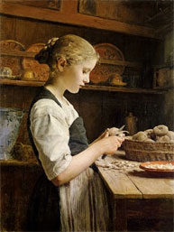
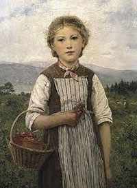
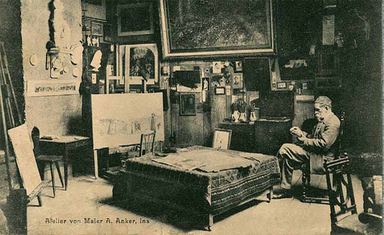
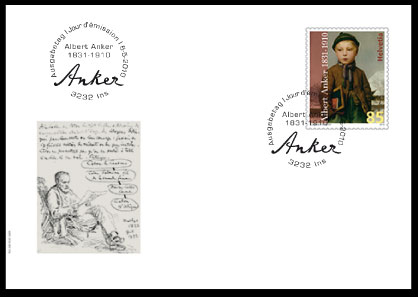
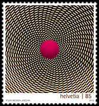
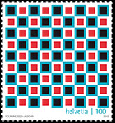
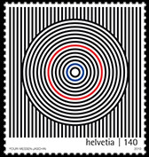
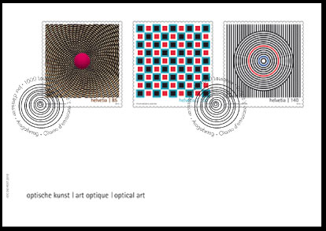
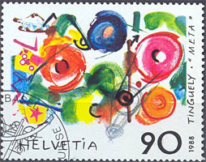

Albert Anker
Albert Anker was a prominent figure on Switzerland’s cultural landscape. Even 100 years after his death, he is arguably Switzerland’s best-known and most popular painter, and his style - as seen in familiar works like his “Kartoffelschälendes Mädchen” (Girl Peeling Potatoes), “Erdbeer-Mareili” (The Strawberry Girl), and the picture of a girl dreamily braiding her hair – is still unmistakable.
 |
 |
Albert Anker, who died on 16 July 1910 in his house in Ins in the Lakes Region (Seeland) of Canton Berne after an eventful, industrious life, is still very much to the fore in the 21th century.

Various exhibitions and events are scheduled for 2010 to commemorate the centenary of Albert Anker’s death. A highlight of this Anker Year is the major exhibition of his work in Berne’s Museum of Fine Arts, from May,7 to September,5 2010.
His paintings sell for record prices at auction, and there was even a major Anker exhibition in Japan in 2008. His studio in Ins (which has been left virtually unchanged over the years, complete with personal items) is visited by thousands of people every year.

To commemorate the centenary of artist's death, Swiss Post issued on May 5, 2010 a special stamp. We show it above increased in size, for your pleasure. The actual stamp size is: 32.5 x 40mm. The stamp was designed by Suzanne Potterat, from Berne.

Optical Art
For the very first time, Swiss Post is featuring Optical Art on stamps created exclusively for it by the artist Youri Messen-Jaschin. This Swiss born Latvian artist has made an international name for himself as one of the foremost exponents of Optical Art and has now exhibited practically all over the world. When images suddenly move or a ball in a picture seems to float in mid air, optical effects are a likely explanation. Even though such images are only painted and two-dimensional, the eye feels drawn into a three-dimensional world.
 |
 |
 |
Q. Youri Messen-Jaschin, Optical Art is a special style of painting. What first prompted you to paint geometric shapes of all things?
When I was studying in Gothenburg, I got to know famous Optical Art exponents like Jésus Soto, Carlos Cruz-Diez and Julio Le Parc. They initiated me into the logic of their art, and I quickly became hooked. They taught me Kinetic Art - or Op Art - in a matter of days.
My paintings bring about the men - mental deprogramming that clears the way for pure sensation, which is the starting point of any reverie.
Q. Do some people respond to Optical Art better than others?
Yes, children. They don’t think about things too much and often have a very open mind. With them, Optical Art works immediately, in a matter of seconds. Adults often take longer, and in my exhibitions it’s frequently the children who explain the pictures to the adults.

The stamps will be issued on September 3, 2010. Their sizes are: 40.5 x 44mm. The set was designed by the artist himself (Youri Messen-Jaschin, Lausanne). See above some smaller images of these stamps and the related FDC.
Sources (pdf): Focus on Stamps 2/2010, 3/2010
Comments
When comparing both issues there are several things that strike. Switzerland commemorates the 100th death centenary of one of its most renown and popular artists, Albert Anker, and dedicates to him one stamps, in an usual format, which isn't actually untypical for the Swiss Post, rather conservative in what concerns the number of issued stamps. But why then three (!) stamps at once for a relatively unknown Youri Messen-Jaschin?
Let's
take a look also at the stamps' sizes. The Anker stamp has a surface of
32.5 x 40mm = 1300mm2, and the the op-art ones 40.5 x 44mm =
1782mm2. This is each time 37 percent more space for the op-art.
The biggest Swiss art stamp so far was the Meta - Tinguely
stamp of 1988, a joint
issue with France, sized 36.85 x 48mm = 1768.8mm2. Please note
that the sculptor Jean Tinguely was also a representative of the Kinetic
Art and that even the stamp dedicated to him is is a bit smaller than the
new op-art stamps.

One can wonder why this discrepancy in the number of stamps and in their sizes between Anker's work and the op-art set? The answer should be searched in the philosophic-artistic preferences of the so-called cultural elites of Switzerland, strongly left-oriented, like elsewhere adepts of pushing on us all kind of more or less artistic experiments, and who definitively decide the Swiss stamps issuing program.
Eventually re-read the interview of Mr. Messen-Jaschin, in which he bluntly explains his artistic credo. He learned his mastery "in a matter of days". His goal is: "...the mental deprogramming that clears the way for pure sensation, which is the starting point of any reverie". Through his art Messen-Jaschin is trying to cut out our reasoning abilities, replacing our focusing capacities by a state of dreaming. After him, his first fans are children, who "don’t think about things too much".
Because Albert Anker's work is strongly related to conservative values of the majority of Swiss population, the pushing away from Anker toward Op-art & Co by the self-clamed Swiss artistic elites becomes then perfectly explicable.
In this context a good question is what actually want the stamp collectors. Polls from different countries have consistently indicated that the stamp collectors are "conservative", the majority of them preferring stamps depicting classical works of art. The result of a stamp issuing policy like the one described above is pushing the collectors either off stamp collecting or toward doubtful issues from countries like Grenada-Grenadines and their relatives.
The Swiss museums possess a large number of real masterpieces, works of local and foreign artists. The time came for presenting them on future Swiss stamps in a systematic manner, graphically attractive (why not engraved), and adressing issues that call for the reasoning abilities of the Swiss and worldwide stamp collectors .